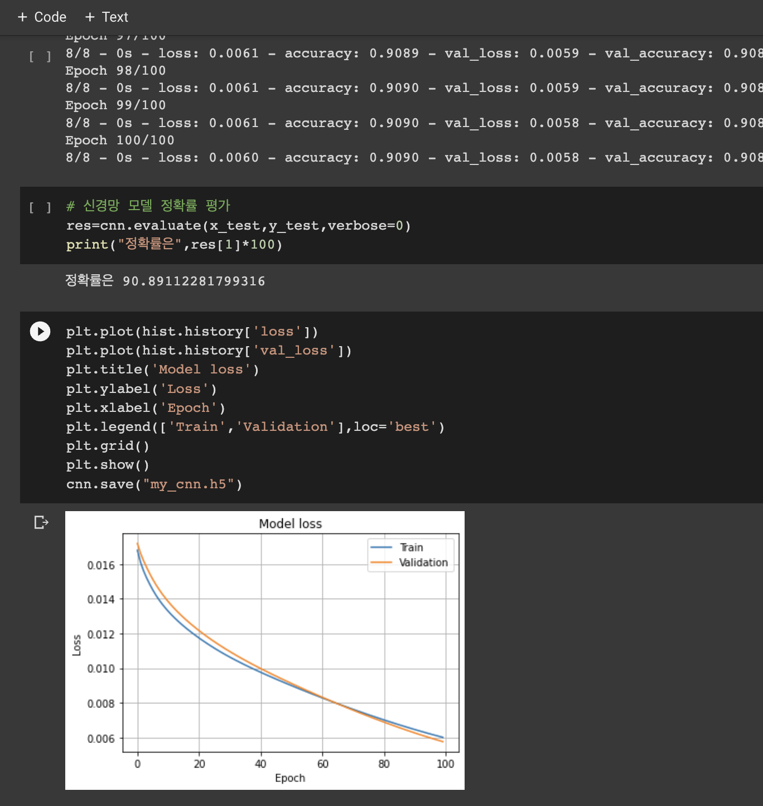

#include <stdio.h>
int main(void)
{
printf("I\'m Jin Il Sung, a developer.");
return 0;
}
진일성 (Jin Il Seong)
생년월일 : 98.08.27
군산대학교
전공 : 컴퓨터정보통신공학부
phone : 010-4390-1xxx
e_mail : dlftjd27@kunsan.ac.kr
Tenacity
집념을 가지고 목표에 도달하는 개발자입니다.
Skill


Sanpero(산페로)
- 친구의 졸업 작품으로 시작한 프로젝트입니다. 이전까지 혼자 하던 프로젝트와 다르게 총 5명 (개발자 3명, 디자이너&기회자 1명, 뮤지션 1명,)인 팀으로 제가 맡은 개발은 주로 포스트 프로세싱을 사용한 이펙트 효과 그리고 라이팅을 사용한 비주얼 변화, UI에 기능 부여를 주로 작업하였습니다.
- 이 프로젝트는 저에게 있어 팀 프로젝트를 할 때 마주해야 할 마음 가짐 그리고 혼자가 아닌 팀원들과 같이 함으로써 코드에 대한 설명과 코드에 대한 가속성 그리고 코드 정리의 중요성을 느낄 수 있는 좋은 경험이었습니다.
AI

- 요즘 트렌드인 인공지능의 모델의 알고리즘 중 이미지 처리에서 중요한 CNN과 자율주행 학습에서 사용하는 강화 학습이라는 알고리즘 두 개를 학습하였습니다.
- CNN 알고리즘의 중심에 있는 합성곱을 확인하기 위해 필터의 가중치를 추출하여 파이썬을 통해 합성곱 모델을 똑같기 구현하여 실제 모델의 결과와 구현하여 얻은 결과를 비교하여 합성곱을 확인해봤습니다.
- Gym API를 활용하여 카트 폴을 학습하여 봤습니다.